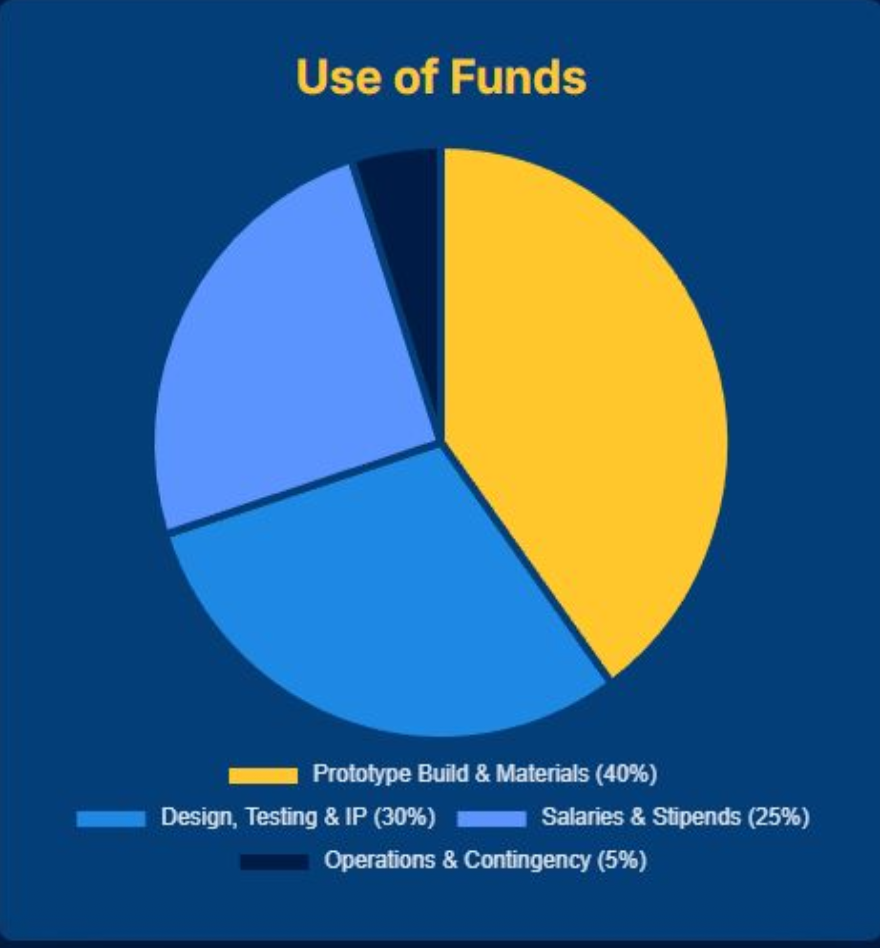

WaveShift is built to win on unit economics and repeatable deployments, not on flashy one-off hardware.
Economics
Unit economics, pricing structure, and repeatable deployment model
Business Model
How WaveShift makes money and expands per customer
Core thesis: ports don't want to buy a boat — they want persistent coverage with measurable outcomes and predictable cost.
Revenue Model
- Paid pilots → annual contracts
- Per-site base + per-vessel expansion
- Recurring, contract-driven revenue
What Customers Buy
- Guaranteed coverage hours
- Verification + response workflow
- Reporting & audit trail
Why This Isn't Hardware Sales
- Value = coverage, not hulls
- Human-in-the-loop workflows
- Reliability & uptime over time
Revenue compounds per site — expansion is structural, not aspirational.
Initial Product Scope
What Sentinel-ASV delivers in early deployments
A practical first configuration: port monitoring + patrol + verification, designed to plug into existing security operations.
WaveShift's early product is intentionally commercial and compliance-friendly: monitor, verify, document, coordinate response.
✔ Included
- • Uncrewed ASV platform (hull + propulsion)
- • Comms & remote ops (LTE/5G + sat backup)
- • Core sensing: radar, EO/IR, AIS
- • Autonomy & safety (geofencing, collision avoidance)
- • Operator console + deployment support
🚫 Not Included (By Design)
- • Weapons or armed payloads
- • High-end military mission sets
- • National-defense scope claims
Unit Economics
Per-vessel costs, margins, and operating assumptions
Strong unit economics are what make this model repeatable at scale.
Hardware BOM (Per Vessel)
Cost driven by sensors, comms, and redundancy — not bespoke hardware
- Estimated BOM range: ~$75k–$250k+
- • Radar: Commercial marine radar (low-$k to ~$10k+ depending on capability)
- • EO/IR: Entry stabilized EO/IR (~$10k+) to higher-end options
- • Connectivity: Maritime LTE + satellite backup (e.g. Starlink Maritime class)
- • AIS: Class-dependent transponder (~$200–$2k+)
WaveShift does not require bleeding-edge sensors on day one — reliable detection and verification at port ranges is sufficient.
Annual Operating Run-Rate (Per Vessel)
Recurring costs tied to uptime, connectivity, and monitoring
- Estimated annual run-rate: ~$40k–$150k
- • Connectivity: Cellular primary with satellite backup where required
- • Maintenance & spares: Marine environment realities
- • Insurance & compliance: Docking, charging, and coverage
- • Software & monitoring: Ops tooling, updates, training
Strong unit economics are driven by recurring contracts and disciplined operations, with hardware amortized over the service lifetime.
Why This Beats Crewed Patrols
More coverage, less labor, predictable cost
Crewing stacks labor, fuel, scheduling, and utilization inefficiency.
- • Conservative benchmark: U.S. Coast Guard reimbursable rate of ~$3.7k–$4.8k per hour for a port security boat
- • Labor dominates cost: Crewed patrols incur fixed staffing regardless of utilization
- • Utilization loss: Gaps in coverage driven by shifts, downtime, and scheduling
WaveShift does not need to beat this hourly rate on day one.
It wins by delivering more coverage hours with fewer human minutes
under a predictable annual contract.
Pricing Structure
How contracts are structured and justified
What the port buys: guaranteed coverage capacity + reporting + integration into their workflow.
Contract Structure
- Base site contract: Foundation subscription per location
- Per-vessel add-ons: Expand coverage within the same site
Typical service pricing target: $250k – $600k per vessel-year (service contract)
(Varies by coverage hours, sensor suite, response workflow, and SLA.)
Customers aren't comparing to "buying a boat." They're comparing to staffing crews (overtime, turnover, compliance), fuel + maintenance + downtime, limited coverage hours, and lack of auditability.
If a small crewed security boat can effectively cost thousands per hour on a fully-loaded basis in official reimbursable tables, ports can justify a contract that delivers persistent coverage with fewer human hours.
Initial Market Footprint (SOM)
A focused path to $10–15M ARR
WaveShift's early SOM is intentionally tight and operationally realistic:
A disciplined, pilot-led approach to a repeatable deployment pattern.
This is why WaveShift starts with monitoring/patrol: it's a repeatable deployment pattern across many ports.
Customer Success Metrics
What customers track — and renew on
WaveShift should sell with a dashboard that ties directly to outcomes: coverage delivered, operator efficiency, verified incidents, and audit-ready reporting.
Customers renew based on measurable outcomes — not robot demos.
Capital Plan
What this round unlocks economically
WaveShift is seeking a $500,000 pre-seed round to execute Phase I, focused on demonstrating a modular, open-architecture Sentinel-ASV platform with minimal autonomy and remote-operations stack over a 15-month timeline.
This capital takes WaveShift from concept risk to paid-pilot readiness.
This funding is intentionally scoped to reach a pilot-ready prototype, not full commercialization.
Use of Funds (Phase I)
40%
Prototype Build & Materials
Hull fabrication, propulsion, power systems, mechanical integration, and sensor mounting for the first Sentinel-ASV prototype.
30%
Design, Testing & IP
Finalizing platform architecture, autonomy integration, control systems, simulation, bench testing, and protection of core intellectual property.
25%
Salaries & Stipends
Engineering labor, integration support, and stipends for focused development and testing periods.
5%
Operations & Contingency
Insurance, logistics, test site access, and contingency buffer for hardware iteration.

This capital converts technical risk into commercial pilot readiness.
What This Capital Unlocks (Economically)
- Build and test a first Sentinel-ASV prototype
- Validate hardware cost assumptions used in unit economics
- Prepare for paid pilot discussions with ports and maritime operators
- De-risk the transition from prototype to annual service contracts
References & Cost Benchmarks
Key sources informing WaveShift's unit economics and market positioning
U.S. Coast Guard — Standard Reimbursable Rates for Maritime Security Assets
Official reimbursable rate tables including hourly rates for port security operations and maritime patrol vessels.
Visit Source →Starlink — Maritime Connectivity: Hardware and Service Pricing
Satellite connectivity solutions for uncrewed maritime systems, including hardware costs and service plans for remote operations.
Visit Source →Commercial Marine Radar Systems — Representative Open-Array Radar Pricing
Commercial marine radar systems pricing data, including Garmin open-array radar systems and similar surface detection sensors.
Visit Source →Commercial EO/IR Payloads — Maritime & Uncrewed Systems Market Overview
Electro-optical and infrared payload options for maritime surveillance, ranging from entry-level stabilized systems to advanced sensors.
Visit Source →AIS Transponders — Commercial Availability and Pricing
Automatic Identification System (AIS) transponder specifications, commercial availability, and pricing across different vessel classes.
Visit Source →